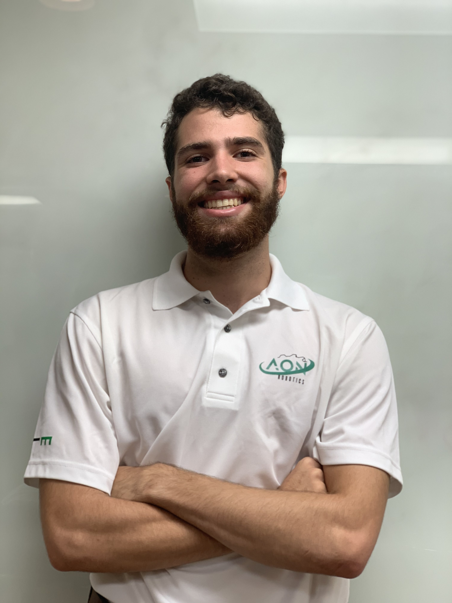
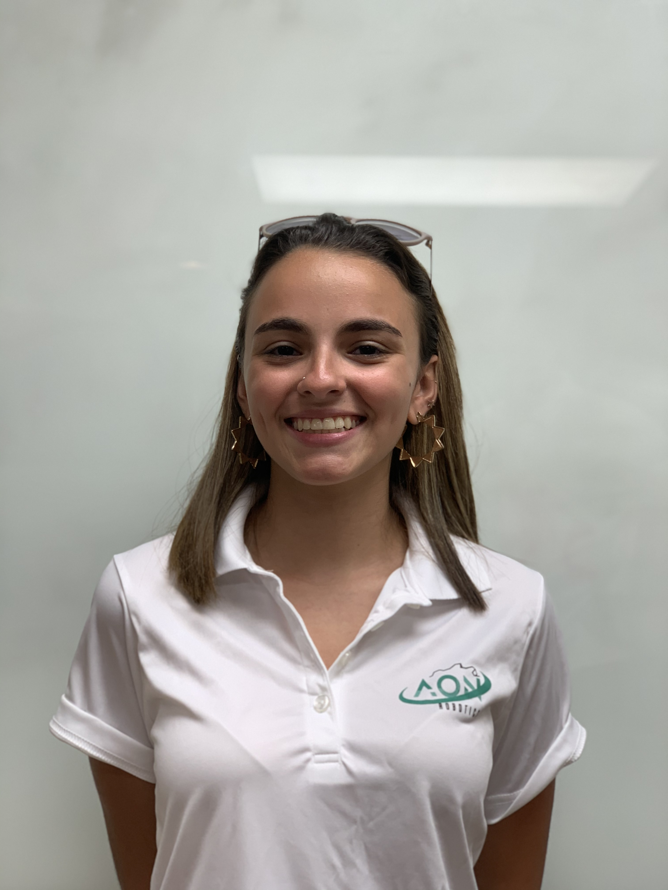
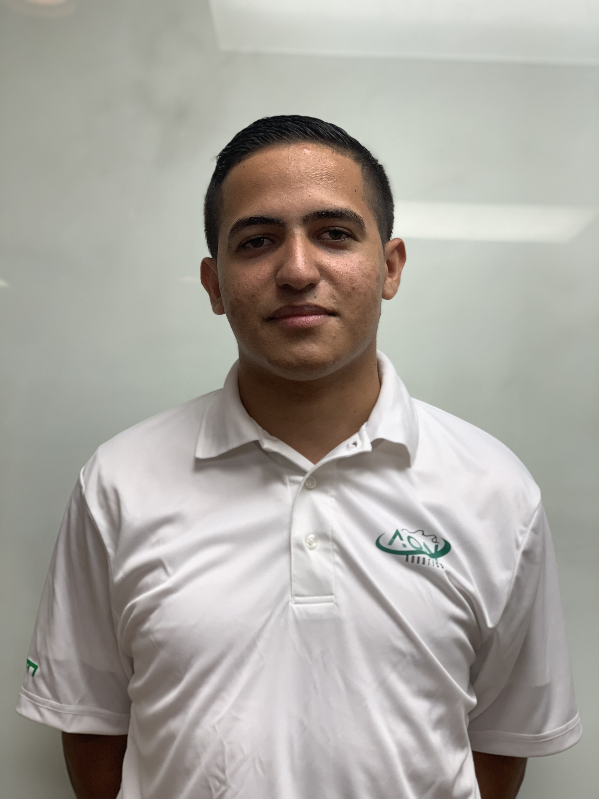
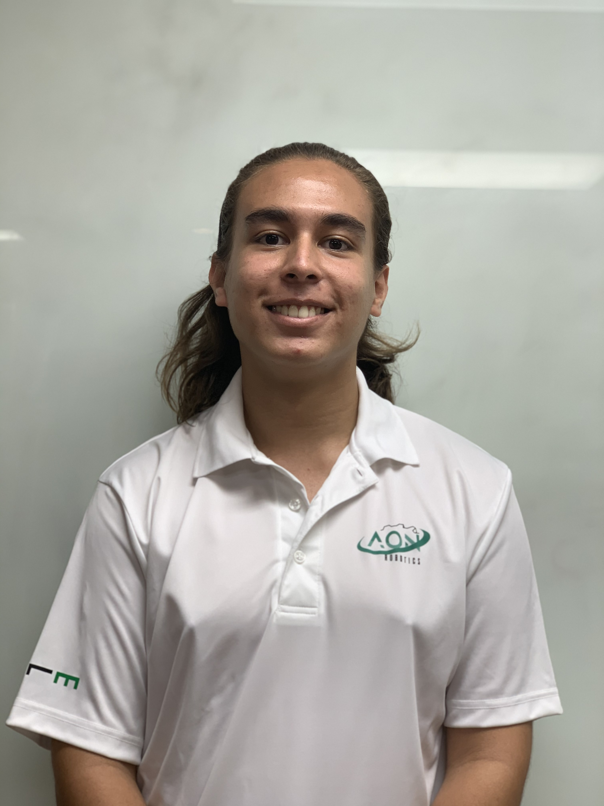
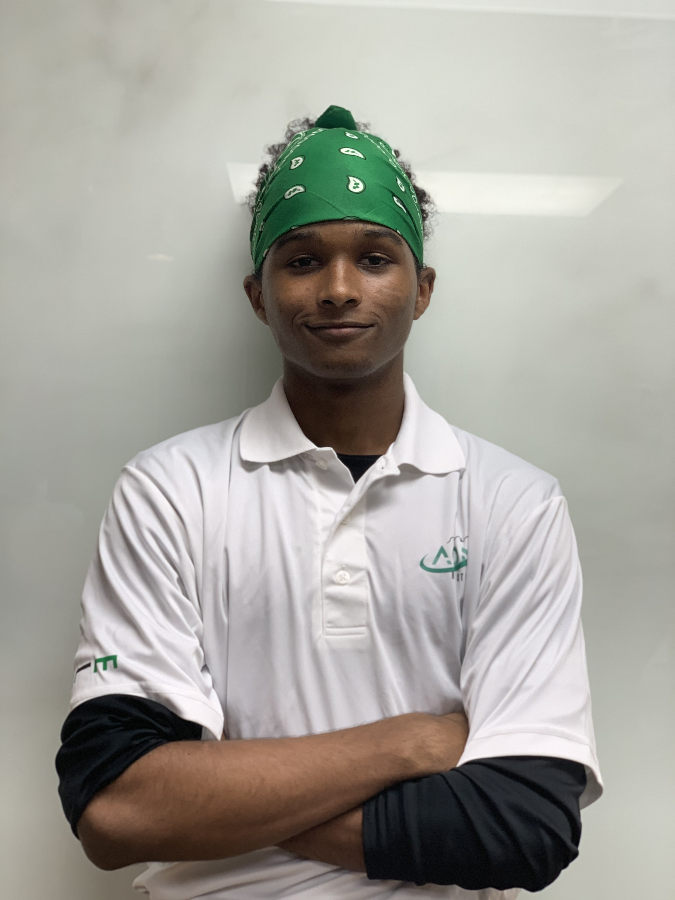
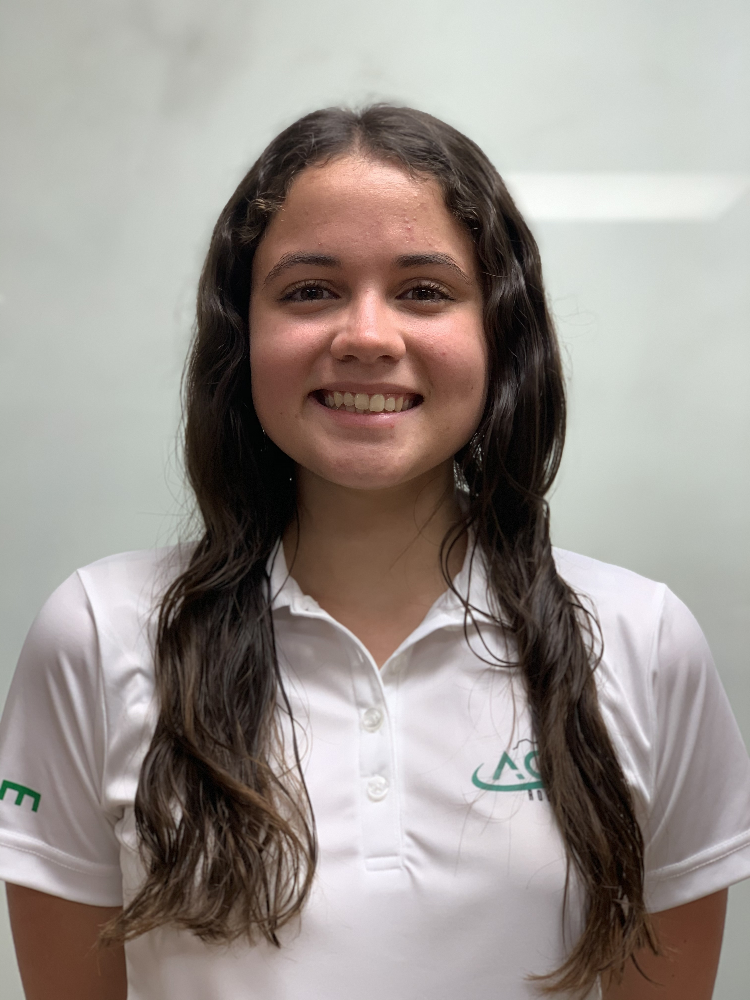

James Ackerman
My professional interests lie in the automotive or aerospace industry, as I look to propel new innovations striving to transform our future. I decided to begin working in robotics during my high school years whilst
eager to find a relatively new area to learn, develop and apply new skills. I joined AON Robotics to continue working in a competitive environment while furthering skills relevant to my professional development.

Ana Ortiz
Currently, I am focused on computer hardware. However, I am interested in obtaining a master’s degree in bioengineering or biotechnology to enter the field of prostheses. My along-term goal is to develop my own company
and create an office of my specialty.

Andrew González
After graduating, I am aiming towards continuing graduate studies in order to educate myself even more and become a specialist in software engineering. I joined AON-R because it has been recognized at a worldwide
level and I think that I can help achieve the team's main goal of winning the VEX Robotics World Championship. Also, the team chemistry is great and the environment promotes learning and applying skills that are acquired in the classroom.

Marcos Pesante
My professional goal is to continue to expand my knowledge in STEM so that I may contribute to my community. I joined AON Robotics to continue my passion for VEX Robotics with more freedom and more opportunities
than in High School.

Alberto Cruz
Currently, I'm starting a double bachelor's in Software and Electrical engineering. My professional goal is to apply to graduate school and obtain a Ph.D. in robotics. I joined AON-R because I have always been interested
in robotics since high school. I utilize this opportunity to explore and expand my knowledge and experience in software and engineering in an extracurricular level

Nicole Román
In my future, I would like to lead projects in the technology industry, mainly focusing on software. The reason I joined AON-R is because I'm a robotics enthusiast with over six years of experience participating in
VEX with hopes to expand my knowledge and learn new abilities along the way.